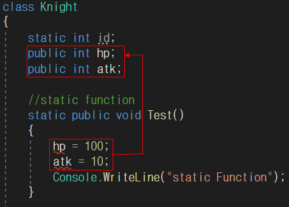
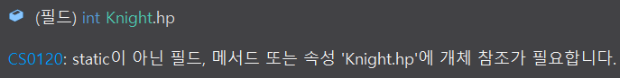

#4 static keyword
[목차]
- 1. static ?
- 2. static 함수는 non-static 필드에 접근하지 못한다.
- 3. static 함수를 사용하는 이유
* 개인적인 공부 기록용으로 작성한 글이기에 잘못된 내용이 있을 수 있습니다.
#1 static ?
static 키워드를 붙인 함수, 변수, 클래스는 단 하나만 존재할 수 있습니다. 대표적인 예시로 main 함수가 있습니다.
붕어빵을 예로 들자면, 붕어빵의 밀가루와 같은 것이라 할 수 있습니다. 붕어빵 틀 (class) 로 , 붕어빵 (객체)를 찍어 낼때 붕어빵은 여러가지 맛이 나올 수 있습니다. (크림 붕어빵, 팥 붕어빵 등등) 하지만, 붕어빵의 밀가루는 어떤 붕어빵을 찍어낸다고 해도 항상 고정입니다. 따라서, 붕어빵의 밀가루를 static 변수로 선언하는 것이지요. (제가 지어낸 설명이라 맞지 않은 부분이 있을 수 있습니다. :))
#2 static 함수는 non-static 필드에 접근하지 못한다.
다음으로 static 함수와 non-static 함수의 차이에 대해서 설명하도록 하겠습니다. 구별하는 방법은 간단합니다. static 함수는 가장 앞에 static 키워드가 있고 non-static 함수는 아무런 키워드도 없습니다. (non-static 함수는 일반 함수를 지칭합니다.)
//static function
static public void Test()
{
Console.WriteLine("static Function");
}
//non-static function
public void Test2()
{
Console.WriteLine("non-static Fucntion");
}또한, static 함수는 클래스 내부의 non-static 필드에 접근하지 못합니다. (non-static 필드란, static 키워드가 붙지 않은 일반 필드를 의미합니다.) 아래와 같이, static 함수 내부에서 non-static 변수에 접근을 시도하자, CS0120 : static이 아닌 필드, 메서드 또는 속성에 개체 참조가 필요 하다는 오류 메시지가 출력됩니다. * static 변수 (id) 는 접근 가능합니다.
 
#3 static 함수를 사용하는 이유
static 함수는 non-static 함수와 달리 객체의 생성 없이 바로 접근이 가능하다는 장점이 있습니다. 아래 예제를 봐주세요.
namespace TextRpg
{
class Knight
{
//non-static function
public void Attack2()
{
Console.WriteLine("non-static Fucntion - Attack !");
}
}
class Program
{
static void Main(string[] args)
{
Knight knight = new Knight();
knight.Attack2();
}
}
}위의 예시와 같이, 클래스 내부의 함수를 사용하기 위해서는 보통 객체 (knight)를 생성 해야만 , 객체 안의 함수(Attack2)를 사용할 수 있습니다.
하지만 아래 코드처럼 static 함수는 객체의 생성 없이 "클래스이름.정적함수이름"으로 바로 사용이 가능합니다.
namespace TextRpg
{
class Knight
{
//static function
static public void Attack()
{
Console.WriteLine("static Function - Attack !");
}
}
class Program
{
static void Main(string[] args)
{
Knight.Attack();
}
}
}따라서, 메시지를 출력하는 Console.WriteLine()의 WriteLine()은 객체의 생성 여부와 관계없이 사용이 가능하기에 static 타입 인것이고, Random은 rand 객체를 사용한 후에 내부의 함수들을 사용이 가능하기에, non-static 타입이라는 것을 예상할 수 있습니다.
class Program
{
static void Main(string[] args)
{
// static Function
Console.WriteLine("Hello World!");
// non-static Function
Random rand = new Random();
rand.Next();
}
}